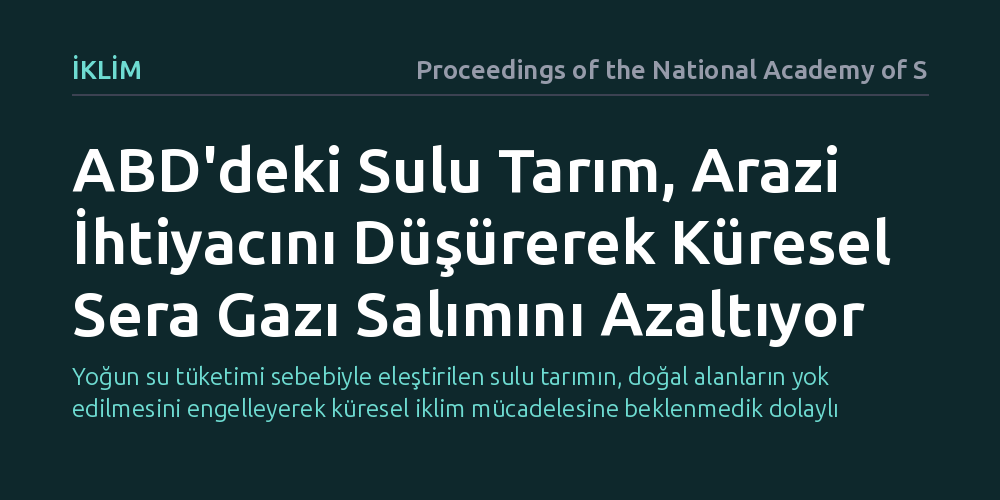

IKLIM · Proceedings of the National Academy of Sciences · 2026-10-07
Araştırmacılar, ABD'de uygulanan sulu tarımın küresel sera gazı salımları üzerindeki etkisini inceledi. Sulama sayesinde artan verimin, doğal ekosistemlerin tarıma açılmasını önleyerek dünya genelinde sera gazı salımlarını düşürdüğü bulundu.
Yoğun su tüketimi sebebiyle eleştirilen sulu tarımın, doğal alanların yok edilmesini engelleyerek küresel iklim mücadelesine beklenmedik dolaylı bir katkı sağladığını gösteriyor.

Tarım sektörü küresel ölçekte iki temel yoldan sera gazı salımına yol açıyor: Çiftlik içi doğrudan faaliyetler ve yeni tarım arazisi açmak için doğal ekosistemlerin dönüştürülmesi. Özellikle ormanların ve otlakların tarıma açılması, toprakta ve bitki örtüsünde depolanan yüksek miktardaki karbonun atmosfere salınmasına neden oluyor. Bu nedenle artan dünya nüfusunu beslerken aynı zamanda doğal alanları korumak, iklim değişikliğiyle mücadelenin en kritik başlıklarından birini oluşturuyor.
Sulu tarım, birim alandan alınan verimi ciddi oranda artırsa da yoğun su ve enerji tüketimi nedeniyle çoğu zaman yerel çevre sorunlarıyla anılıyor. Ancak araştırmacıların yanıt aradığı temel soru, bu yüksek verimin küresel gıda piyasaları üzerinden doğal alanların korunmasına nasıl bir katkı sağladığıydı. Bir bölgede verimi artıran bir uygulama, dünyanın başka yerlerinde ormanların tarım arazisine dönüştürülmesini engelleyebilir miydi?
Çalışmada, ABD genelinde sulu tarımın sağladığı ürün verimi artışı ile bu üretimin küresel tarım ticareti ve arazi talebi üzerindeki etkileri modellendi. Araştırmacılar, çiftlik düzeyindeki enerji ve su kullanımından kaynaklanan doğrudan sera gazı salımları ile verim artışının küresel ölçekte önlediği arazi dönüşümü salımlarını karşılaştırdı.
Analiz, küresel gıda talebinin karşılanmasında verim artışının ne kadarlık bir doğal ekosistemi tarıma açılmaktan kurtardığını simüle eden modellere dayandırıldı. Böylece sulamanın getirdiği yerel salım yükü ile küresel düzeyde önlenen ekosistem kayıpları tek bir karbon dengesi altında değerlendirildi.
Elde edilen sonuçlar, ABD'deki sulu tarım uygulamalarının birim alandan elde edilen üretimi yükselterek küresel ölçekte ilave tarım arazisi ihtiyacını belirgin şekilde azalttığını gösterdi. Verim yüksek olduğunda, küresel pazarların ihtiyaç duyduğu gıdayı üretmek için dünyanın diğer bölgelerindeki doğal orman ve çayırların tarlaya dönüştürülmesine duyulan gereksinim azalıyor.
Sulu tarım doğrudan çiftlik faaliyetlerinde enerji ve kaynak tüketse de, doğal ekosistemlerin korunması yoluyla sağlanan sera gazı tasarrufu bu yerel yükü dengeliyor. Dolayısıyla yerel ölçekte su tüketimi yaratan bir tarımsal faaliyet, küresel ölçekte net bir sera gazı azaltım faydası üretebiliyor.
Bu sonuçlar, tarım ve iklim politikalarının yalnızca yerel su havzaları ve doğrudan çiftlik salımları üzerinden değil, küresel tedarik zincirleri ve arazi kullanımı dinamikleri göz önüne alınarak kurgulanması gerektiğini ortaya koyuyor. Sulu tarımın sağladığı yüksek verim, ormanların ve hassas ekosistemlerin korunmasında stratejik bir arazi koruma mekanizması işlevi görüyor.
Bununla birlikte çalışma, su kaynaklarının aşırı kullanımı ve yerel su kıtlığı gibi risklerin göz ardı edilebileceği anlamına gelmiyor. Esas çözüm; yerel su kaynaklarını korurken, yüksek verim odaklı tarım uygulamalarını küresel ekosistem koruma stratejileriyle bütünleştiren dengeli politikalar geliştirmekten geçiyor.